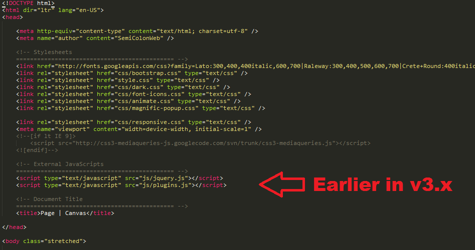
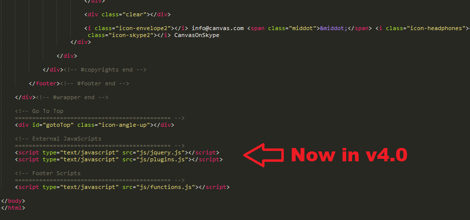
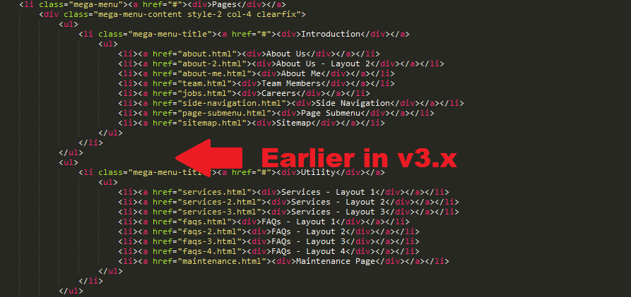
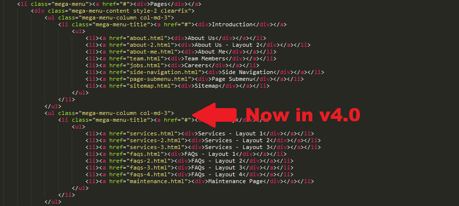
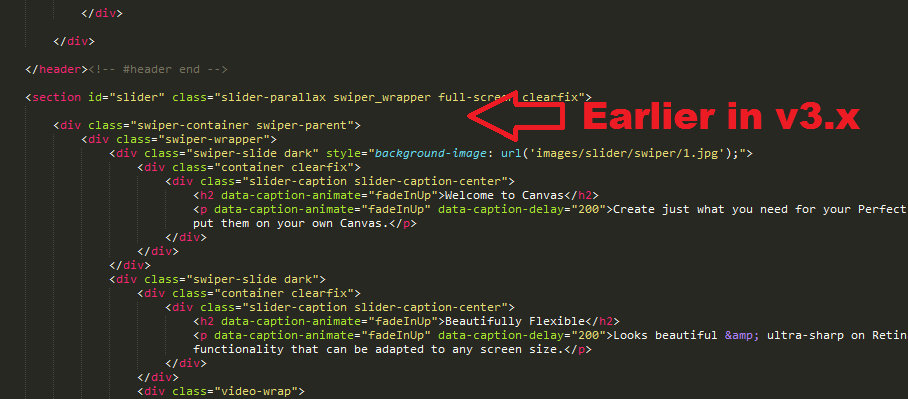
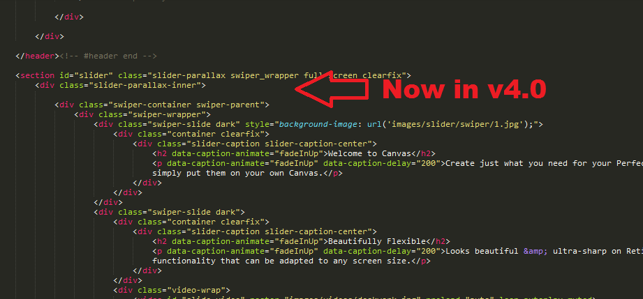

Download EasyBuider, unzip and run EasyWeb Builder.exe file
Sign up / Sign in when EasyBuilder started. This account contains information of websites your owned or managed
Notes
Create a website
Click Create new site
Select a website from EasyWeb market, e.g pillar
Your website is created and ready to use
Install EasyBuilder
Download EasyBuider, unzip and run EasyWeb Builder.exe file
Sign up / Sign in when EasyBuilder started. This account contains information of websites your owned or managed
Notes
- Only support Windows 64 bit (Windows 32 bit, Linux or Mac will comming soon)
- For Vietnamese users, download link from Fshare for more speed
Create a website
Click Create new site
Select a website from EasyWeb market, e.g pillar
Your website is created and ready to use
Build website on your machine
Click Build to run your website on local
Your website shows on EasyBuider, or you can view on Chrome, FireFox or IE by click On Browser
Click to Device Mode to view the website easily on Smartphone, Tablet modes
Color Schemes
You can change your Website's Color Scheme in an instant. You simply need to change the HEX Color Code in the css/colors.css file & you are good to go. Follow these quick steps to get going:
-
Make sure you add the
css/colors.cssstylesheet in your head after the responsive stylesheets.<head> ... <link rel="stylesheet" href="css/responsive.css" type="text/css" /> <meta name="viewport" content="width=device-width, initial-scale=1, maximum-scale=1" /> <!--[if lt IE 9]> <script src="http://css3-mediaqueries-js.googlecode.com/svn/trunk/css3-mediaqueries.js"></script> <![endif]--> <!-- Here goes your colors.css ============================================= --> <link rel="stylesheet" href="css/colors.css" type="text/css" /> ... </head> - Now simply change the HEX Codes according to your requirements.
Dark Scheme
You can also completely change the Contrast of the Website to Dark, simply by adding the .dark Class to the body Tag. You can also add the .dark Class to certain elements like #header, #primary-menu, .section, Slides, #footer & many other elements. This will help you experimenting with different color schemes. The .dark Class will also be very helpful for turning the Texts of a container to light color.
Changing Fonts
Change your Fonts on the Fly as we have included a css/fonts.css file to manage the custom fonts you include with ease. By default, Canvas uses 3 Fonts namely: Raleway, Lato & Crete Round from the Google Fonts Library. You can find the Linking to the Font Files in the head tag of all the .html files.
<link href="http://fonts.googleapis.com/css?family=Lato:300,400,400italic,600,700|Raleway:300,400,500,600,700|Crete+Round:400italic" rel="stylesheet" type="text/css" />
In order to change the Fonts, you will need to Edit the Above Links with your Custom Font if you plan to use a Google Font or Remove it complete if you plan to use a Self Hosted font. Here is an Example for using Self Hosted Fonts.
You can now be able to change the Font Names in the css/fonts.css File.
Theme Customization
We have include a Custom CSS File in the css Folder so that you can better handle your Customizations while updating Canvas to the Latest Version. Simply add all your Custom CSS Codes in the css/custom.css File and link it in the Document <head> after the css/responsive.css Linking. Also make sure that this is the Last Linked CSS File in the Document <head> so that your Custom CSS Styles are Overwritten properly.
Example:
<head>
...
<link rel="stylesheet" href="css/responsive.css" type="text/css" />
<meta name="viewport" content="width=device-width, initial-scale=1, maximum-scale=1" />
<!--[if lt IE 9]>
<script src="http://css3-mediaqueries-js.googlecode.com/svn/trunk/css3-mediaqueries.js"></script>
<![endif]-->
<!-- Here goes your custom.css
============================================= -->
<link rel="stylesheet" href="css/custom.css" type="text/css" />
</head>
Setting up RTL
We have included all the Tools to make your Website completely RTL ready. Simply follow the steps below:
- Add the
dir="rtl"to the<html>Tag. Example:<html dir="rtl" lang="ar">
- Add the RTL related CSS in the Document
<head>. Example:<head> <meta http-equiv="content-type" content="text/html; charset=utf-8" /> <meta name="author" content="SemiColonWeb" /> <!-- Stylesheets ============================================= --> <link href="http://fonts.googleapis.com/css?family=Lato:300,400,400italic,600,700|Raleway:300,400,500,600,700|Crete+Round:400italic" rel="stylesheet" type="text/css" /> <link rel="stylesheet" href="css/bootstrap.css" type="text/css" /> <link rel="stylesheet" href="css/bootstrap-rtl.css" type="text/css" /> <link rel="stylesheet" href="style.css" type="text/css" /> <link rel="stylesheet" href="style-rtl.css" type="text/css" /> <link rel="stylesheet" href="css/dark.css" type="text/css" /> <link rel="stylesheet" href="css/dark-rtl.css" type="text/css" /> <link rel="stylesheet" href="css/font-icons.css" type="text/css" /> <link rel="stylesheet" href="css/font-icons-rtl.css" type="text/css" /> <link rel="stylesheet" href="css/animate.css" type="text/css" /> <link rel="stylesheet" href="css/magnific-popup.css" type="text/css" /> <link rel="stylesheet" href="css/responsive.css" type="text/css" /> <link rel="stylesheet" href="css/responsive-rtl.css" type="text/css" /> <meta name="viewport" content="width=device-width, initial-scale=1" /> <!--[if lt IE 9]> <script src="http://css3-mediaqueries-js.googlecode.com/svn/trunk/css3-mediaqueries.js"></script> <![endif]--> <!-- Document Title ============================================= --> <title>Page | Canvas</title> </head>
- Add the
.rtlClass to the<body>Tag. Example:<body class="stretched rtl">
Setting up LESS CSS
-
Step 1:
Change all the following CSS Linking in your
<head>Tag:1. <link rel="stylesheet" href="style.css" type="text/css" /> 2. <link rel="stylesheet" href="css/dark.css" type="text/css" /> 3. <link rel="stylesheet" href="css/responsive.css" type="text/css" />
To their respective LESS Linking:
1. <link rel="stylesheet/less" href="style.less" type="text/less" /> 2. <link rel="stylesheet/less" href="less/dark.less" type="text/less" /> 3. <link rel="stylesheet/less" href="less/responsive.less" type="text/less" />
-
Step 2:
Add the LESS Script just after the
js/plugins.jsScript Linking in your<head>Tag:<script src="//cdnjs.cloudflare.com/ajax/libs/less.js/2.1.0/less.min.js"></script>
-
Step 3:
Open the
less/variables.lessand Edit the values according to your needs. If you need more Advanced Setup then you can Edit the Respective Files yourself which have been branched inside thelessFolder. It is completely at your discretion only to include the Required LESS Files you need to minimize the amount of CSS & including only the Styles of the Blocks you need. This can be setup in yourstyle.lessFile.
Note: LESS will work perfectly fine after compiling, but it can still be extended more. If you have any Suggestions to Improve or Requests to Add New Features to the LESS Files, then please Contact Us from Here.
Website Optimization Tips
A Fast & Optimized Website has several factors which needs to be implemented in order to achieve the desired results. There are several Optimization Techniques available which will definitely affect your Website's Performance in a Positive Way & we want to share a few of them with you:
-
gZip Compression & Browser Caching
This is probably one of the Most Important Techniques you should definitely implement in order to bump up your Website's Loading Speed. gZip Compression is used to compress the Files that are delivered when loading a Website. It covers HTML, CSS, Javascript & Font Files along with other miscellaneous text files. Where as Browser Caching also covers Images & Videos apart from including the above files. This is used to saves the Static Data in your Browser itself so that when you open the Next Pages on the Same Website, the content does not gets Downloaded again, loading the Website fast.
gZip Compression & Browser Caching can be enabled using the
.htaccessFile on an Apache Web Server. You can use the Codes from here: https://github.com/h5bp/html5-boilerplate/blob/master/dist/.htaccess to enable these modules on your server. -
Image Compression & Optimization
We tend to use Lots of Images on our Websites but we often do not make efforts to Compress & Optimize them. Remember, the Larger the Image, the more time it takes to download and therefore this slows your website loading times affecting User Experience. Your customer will leave your website if it does not load within 3-5 Seconds which adversely affects your Sales. Therefore, it is important to Resize, Optimize & Compress your Images before using it on your Website. Here are some Tips which might come handy in optimizing images:
- Resize your Images: Resize your Images before using it on your Website. Do not just Download an Image & place it as it is in your Website's
<img>Tag without resizing it. The size/resolution of the Image matters since it is not recommended to use an Image size of1200pxx800pxin a Content Size of300pxx200pxas this is unnecessary. Resize it to300pxx200px - Image Formats: There are three common file types that are used for web images which are JPEG, GIF, & PNG. For images with a Flat Background use JPEG images, for images with a Transparent background use PNG images and for images with Animations use GIF images.
- Compressing Images: Images Compression is important as it considerably reduces the size without losing the quality. There are several FREE Image Optimization Tools available to Download.
For MAC use ImageOptim
For Windows use Riot for compressing JPEG Images & PNG Gauntlet for PNG Images.
- Resize your Images: Resize your Images before using it on your Website. Do not just Download an Image & place it as it is in your Website's
-
CSS & jQuery Minifications
It is also recommended that you Combine & Minify all your CSS Files to a single CSS File & all Javascript Files to a single JS File since Minification reduces the size of the File and Combining the files helps in reducing the number of HTTP requests made to the server. This is also an Important Factor in increasing the speed of your website. There are several tools available online to Minify your CSS & JS Files. Our recommendations are:
For CSS use CSS Minifier and For Javascript use Javascript Minifier. -
Content Delivery Network
You can use a CDN to further speed up your website. You can use the CDN to deliver static files of your website like CSS, JS, Images & Font Files. There are several CDN Hosting Providers available on the Internet but we would recommend MaxCDN or CloudFlare. Note: CDN setup requires Extra monthly Fees to setup, so it is completely optional & according to your needs.
-
Fast Web Hosting Servers
A lot depends on your Web Hosting Servers, so it is recommended that you choose a Hosting Company/Server that provides a Reliable & a Fast Hosting Service. You can check out some recommended Hosting Services here: http://themeforest.net/get_hosting.
Upgrading Canvas: v3.x to v4.0
Canvas v4.0 is a Big Update and requires Changes to the CSS, JS, PHP and HTML Files. We have dramatically Improved Performance in this Version and making some changes were really necessary in order to Increase Flexibility and Stability. We have actually decreased the Size of the CSS Files to some extent without compromising on the Designs and Layouts allowing you more control on the Type of Content you want to Create with Canvas. We definitely understand that Upgrading Canvas from v3.x to v4.0 can be quite a task because of the Multipurpose Nature of Canvas and so we have included the Archived Version of Canvas v3.1.1 in the Package if in any case somethign goes wrong so that you can Rollback. The Full List of Changes are mentioned below:
Note: Always make sure that you have a Complete Backup of your Website before starting to Upgrade Canvas so that you Content is Safe and can be rolled back in case of any issues with Canvas 4.
CSS Files:
-
#primary-menuWe have updated the Primary Menu and Mega Menus to ensure more Flexibility and Less Code. The Mega Menus now uses the Bootstrap Grid allowing to create Mixed Columns and Widgets. It is recommended that you change the Entire Primary Menu related Code Blocks. If you have made any changes to the Original Code then keep a Backup of the Old Code and change the Codes accordingly comparing the New Codes.
Files Affected:style.css,css/responsive.css,css/dark.css,css/colors.css,css/colors.php -
#page-menuWe have updated the Page Menu Codes to handle the Dots Menu more efficiently on Responsive Devices. It is recommended that you change the Entire Page Menu related Code Blocks.
Files Affected:style.css,css/responsive.css,css/dark.css,css/colors.css,css/colors.php -
.slider-parallaxWe have updated the Slider Parallax Codes to address the flickr issue on Mac OS. It is recommended that you change the Entire Slider Parallax related Code Blocks.
Files Affected:style.css,css/responsive.css Swiper Slider Base CSSWe have removed the Swiper Slider Base CSS Codes and moved it to a Separate CSS File named
css/swiper.cssfor better handling of Swiper Plugin Updates. It is recommended that you remove this entire Code Blocks. Search for the following code in thestyle.cssFile:.swiper-container { margin:0 auto; position:relative; overflow:hidden; -webkit-backface-visibility:hidden; -moz-backface-visibility:hidden; -ms-backface-visibility:hidden; -o-backface-visibility:hidden; backface-visibility:hidden; /* Fix of Webkit flickering */ z-index:1; } ...
Files Affected:style.css-
#portfolioWe have updated the Entire Portfolio Code Block including the
#portfolio-filter,#portfolio-shuffleand#portfolio. All the IDs has been changed to Classes to allow Unlimited Portfolio Grids and Filters on a Single Page. We have also decreased the CSS Size. It is recommended that you change the Entire Portfolio related Code Blocks.
Files Affected:style.css,css/responsive.css,css/dark.css,css/colors.css,css/colors.php -
#shopWe have updated the Entire Shop & Products Code Blocks including the
#shopand.product. All the IDs has been changed to Classes to allow Unlimited Shop Grids on a Single Page. We have also decreased the CSS Size. It is recommended that you change the Entire Shop related Code Blocks.
Files Affected:style.css,css/responsive.css - All other Minor Changes has been described in the Changelog Section
PHP Files:
-
Form Processing and Subscription FilesWe have upgraded the PHP Files in the
includeFolder that handles the Form Email and Subscriptions to allow advanced handling of Data and better SPAM Protection. It now supports JSON Output so now the response shows Message Specific Alerts. It is recommended that you change the Form Processing and Mailchimp Subscription related Files. If you have made any changes to the Original Code then keep a Backup of the Old Code and change the Codes accordingly comparing the New Codes.
Files Affected: All PHP Files in theincludeFolder.
HTML Files:
-
JS Files Linking moved to FooterKeeping performance in mind and Page Loading Speed, we have moved all the JS File Linking to the Footer of the HTML Files just before the
js/functions.jslinking. This helps in better Page Speed Performance and preventing in Render-Blocking Javascripts. Additionally, do make sure that now all the Inline JS Scripts used for JS Plugin Initialization have to be moved at the bottom too just after thejs/functions.jslinking.
Files Affected: All HTML Files.Example:

 -
Mega Menu ContentMega Menu is now more Flexible than ever before as you can now add Widgets and use Mixed Width Columns powered by the Bootstrap Grid inside the Mega Menu Content.
Files Affected: All HTML Files with Mega Menu.Example:

 -
Slider ParallaxWe have fixed the issue with the Shaky and Flickering Slider Parallax on Safari on Mac OS. In order to fix this we will have to wrap the Slider Content inside another Container
.slider-parallax-innerwhich has Fixed Position and thus this fixes the Flicker. However, currently not all the Headers & Sliders are supported due to the Fixed Position nature of the.slider-parallax-innerContainer. It is best supported with Canvas Slider Templates at the moment.
Files Affected: Slider Templates with Transparent Header and Headers without Top Bars. Additionally, Headers with.sticky-style-2Class is not supported.Example:

 -
Canvas/Swiper SliderYou will now need to add
css/swiper.cssin the Document<head>on all the Pages with Canvas/Swiper Slider. Also, the Canvas/Swiper Slider Javascript Initialization Code is not required anymore on the Page since it gets initialized using a Global Function. Please check the Slider > Canvas Slider Section for Full Documeentation.
Files Affected: All HTML Files with Canvas/Swiper Slider. -
Page MenuWe have updated the Page Menu Link Item Markup slightly to handle the Dots Menu more efficiently on Responsive Devices. All the Link Item Texts inside the Page Menu are now enclosed inside a
<div>.
Files Affected: All the HTML Pages with#page-menu.Before:
<!-- Page Sub Menu ============================================= --> <div id="page-menu"> <div id="page-menu-wrap"> <div class="container clearfix"> <div class="menu-title">Explore <span>CANVAS</span></div> <nav> <ul> <li class="current"><a href="#">Gallery</a></li> <li><a href="#">Features</a></li> <li><a href="#">Models</a> <ul> <li><a href="#">Small Size</a></li> <li><a href="#">Normal Size</a></li> <li><a href="#">Large Size</a></li> </ul> </li> <li><a href="#">Reviews</a> <ul> <li><a href="#">Expert Reviews</a></li> <li><a href="#">User Reviews</a></li> </ul> </li> <li><a href="#">Compare</a></li> <li><a href="#">Build</a></li> <li><a href="#">Order</a></li> </ul> </nav> <div id="page-submenu-trigger"><i class="icon-reorder"></i></div> </div> </div> </div><!-- #page-menu end -->
After:
<!-- Page Sub Menu ============================================= --> <div id="page-menu"> <div id="page-menu-wrap"> <div class="container clearfix"> <div class="menu-title">Explore <span>CANVAS</span></div> <nav> <ul> <li class="current"><a href="#"><div>Gallery</div></a></li> <li><a href="#"><div>Features</div></a></li> <li><a href="#"><div>Models</div></a> <ul> <li><a href="#"><div>Small Size</div></a></li> <li><a href="#"><div>Normal Size</div></a></li> <li><a href="#"><div>Large Size</div></a></li> </ul> </li> <li><a href="#"><div>Reviews</div></a> <ul> <li><a href="#"><div>Expert Reviews</div></a></li> <li><a href="#"><div>User Reviews</div></a></li> </ul> </li> <li><a href="#"><div>Compare</div></a></li> <li><a href="#"><div>Build</div></a></li> <li><a href="#"><div>Order</div></a></li> </ul> </nav> <div id="page-submenu-trigger"><i class="icon-reorder"></i></div> </div> </div> </div><!-- #page-menu end -->
-
Isotope GridsTo simplify things and to initilaize the Isotope on any Grid, you will simply need to add the
.grid-containerClass to the Container. So, the Isotope Javascript Initialization Code is not required anymore on the Page.
Files Affected: All HTML Files with a Masonry Grid.Additional Options:
data-transition- Transition Speed of the Isotope Grid in seconds. Eg. 0.65data-layout- Layout of the Isotope Grid. Eg. masonry . More Layout Options
-
PortfolioPortfolio Grid now needs the
.portfolioClass which allows Unlimited Portfolio Grids on a Single Page. To initilaize the Isotope on the Portfolio Grid, you will simply need to add the.grid-containerClass to the.portfolioContainer. So, the Isotope Javascript Initialization Code is not required anymore on the Page.
Files Affected: All HTML Files with Portfolio Grid.Before:
<div id="portfolio" class="clearfix">
After:
<div id="portfolio" class="portfolio grid-container clearfix">
-
Portfolio FilterPortfolio Filter now needs the
.portfolio-filterClass which allows Unlimited Portfolio Filters on a Single Page. To activate the Filter on a Portfolio Grid, you will simply need to add thedata-container="#portfolio"Attribute to the.portfolio-filterElement. So, the Isotope Filter Javascript Code is not required anymore on the Page.
Files Affected: All HTML Files with Portfolio Filter.Example:
<ul class="portfolio-filter clearfix" data-container="#portfolio">
-
Portfolio ShufflePortfolio Shuffle now needs the
.portfolio-shuffleClass which allows Unlimited Portfolio Shuffles on a Single Page. To activate the Shuffle Functionality on a Portfolio Grid, you will simply need to add thedata-container="#portfolio"Attribute to the.portfolio-shuffleElement. So, the Isotope Shuffle Javascript Code is not required anymore on the Page.
Files Affected: All HTML Files with Portfolio Shuffle.Example:
<div class="portfolio-shuffle" data-container="#portfolio">
-
ShopShop Grid now needs the
.shopClass which allows Unlimited Shop Grids on a Single Page. To initilaize the Isotope on the Shop Grid, you will simply need to add the.grid-containerClass to the.shopContainer. So, the Isotope Javascript Initialization Code is not required on the Page.
Files Affected: All HTML Files with Shop Grid.Before:
<div id="shop" class="clearfix">
After:
<div id="shop" class="shop grid-container clearfix" data-layout="fitRows">
-
Blog GridTo initilaize the Isotope on the Blog Grid, you will simply need to add the
.grid-containerClass to the#postsContainer. So, the Isotope Javascript Initialization Code is not required anymore on the Page.
Files Affected: All HTML Files with Blog Grid.Before:
<div id="posts" class="post-grid clearfix">
After:
<div id="posts" class="post-grid grid-container clearfix" data-layout="fitRows">
-
Blog Masonry GridTo initilaize the Isotope on the Blog Masonry Grid, you will simply need to add the
.grid-containerClass to the#postsContainer. So, the Isotope Javascript Initialization Code is not required anymore on the Page.
Files Affected: All HTML Files with Blog Masonry Grid.Before:
<div id="posts" class="post-grid post-masonry clearfix">
After:
<div id="posts" class="post-grid post-masonry grid-container clearfix">
-
Contact FormsContact Form markup has been changed slightly to allow unlimited Contact Forms on a Single Page without the hassle of Adding Additional JS Codes for each Contact Form. The Entire Contact Form is now enclosed within the
.contact-widgetContainer and the Contact Form Results container has been replaced.Before:
<div id="contact-form-result" data-notify-type="success" data-notify-msg="<i class=icon-ok-sign></i> Message Sent Successfully!"></div>
After:
<div class="contact-form-result"></div>
The Contact Form Javascript Initialization Code is not required anymore on the Page.
Files Affected: All HTML Files with Contact Forms. -
Quick Contact FormsQuick Contact Form markup has been changed slightly to allow unlimited Quick Contact Forms on a Single Page without the hassle of Adding Additional JS Codes for each Quick Contact Form. The Quick Contact Form Results container has been replaced.
Before:
<div id="quick-contact-form-result" data-notify-type="success" data-notify-msg="<i class=icon-ok-sign></i> Message Sent Successfully!"></div>
After:
<div class="quick-contact-form-result"></div>
The Quick Contact Form Javascript Initialization Code is not required anymore on the Page.
Files Affected: All HTML Files with Quick Contact Forms. -
Subscription FormsSubscription Form markup has been changed slightly to allow unlimited Subscription Forms on a Single Page without the hassle of Adding Additional JS Codes for each Subscription Form. The Subscription Form Results container has been replaced.
Before:
<div id="widget-subscribe-form-result" data-notify-type="success" data-notify-msg=""></div>
After:
<div class="widget-subscribe-form-result"></div>
The Subscription Form Javascript Initialization Code is not required anymore on the Page.
Files Affected: All HTML Files with Subscription Forms. -
Canvas Slider JavascriptCanvas Slider Initialization Javascript is no Longer required on the Page, so please remove it. To initilaize the Canvas Slider please refer to the Documentation > Sliders > Canvas Slider Section.
Files Affected: All HTML Files with Canvas Slider. -
Owl Carousel JavascriptOwl Carousel Initialization Javascript is no Longer required on the Page, so please remove it. To initilaize the Owl Carousel please refer to the Documentation > Shortcodes > Owl Carousel Section.
Files Affected: All HTML Files with Owl Carousel.
Header Types
You can choose between 7 Types of headers while creating your Pages. Simply adding the Header Type CSS class to the Header Element will activate the Header Type. The list of Header Type Classes & its descriptions are provided below for your reference:
| Type Class | Features | Code Example |
|---|---|---|
Default |
Default Header with a White Background & Dark text. |
<header id="header"> ... </header> |
.dark |
Header with a Dark Background & Light text. |
<header id="header" class="dark"> ... </header> |
.transparent-header |
Header with a Transparent Background. This header is effective for showing Sliders or other types of Hero Images on the Top with a Transparent Logo & Menu. You can add the dark class for a Light Colored Text. |
<header id="header" class="transparent-header"> ... </header> |
.semi-transparent |
Header with a Semi Transparent Background. You can add the dark class for a Light Colored Text & a Dark Background. |
<header id="header" class="transparent-header semi-transparent"> ... </header> |
.floating-header |
This activates the Floating Header. You can add the dark class for a Light Colored Text & a Dark Background. |
<header id="header" class="transparent-header floating-header"> ... </header> |
.side-header |
This is a Side Header Left Aligned. Unlike the above Headers, this class should be added to the body. |
<body class="stretched side-header"> <header id="header"> ... </header> ... </body> |
.open-header |
This is a Side Header Left Aligned which is hidden by default & opens via a Trigger. Unlike the above Headers, this class should be added to the body. This class can only be used for the Side Headers. If you want to close the Side Header on scrolling, please add the .close-header-on-scroll class to the body tag. |
<body class="stretched side-header open-header"> <header id="header"> ... </header> ... </body> |
.push-wrapper |
This is a Side Header Left Aligned which is hidden by default & opens via a Trigger. When the Header opens, it also pushes the wrapper to the right. Unlike the above Headers, this class should be added to the body. This class can only be used for the Side Headers. If you want to close the Side Header on scrolling, please add the .close-header-on-scroll class to the body tag. |
<body class="stretched side-header open-header push-wrapper"> <header id="header"> ... </header> ... </body> |
.side-header-right |
This is a Side Header Right Aligned. Unlike the above Headers, this class should be added to the body. You can easily add the .open-header & .push-wrapper classes to the body tag to make this Side Header follow the above behaviours. |
<body class="stretched side-header side-header-right"> <header id="header"> ... </header> ... </body> |
Helper Classes
Use these handy Helper Classes with the Headers making them more flexible than you can imagine.
| Helper Class | Description |
|---|---|
.no-sticky |
Disable Stickiness of the Header. Use it on the header tag. |
.static-sticky |
Disable Resizing when Headers turn Sticky. Use it on the header tag. |
data-sticky-class |
Use a different Header Style when it gets Sticky. This will look something like this:<header class="dark" data-sticky-class="not-dark">You can use these classes: .dark, .not-dark, .semi-transparent. Remember, if you use the .semi-transparent Class, then you'll also need to include the .transparent Class.
|
.not-dark |
This is a Handy Class, if you want to use Mixins. Suppose, You want to use the Dark Header Style, but dont want the Dropdown Menus to be Dark too, then you can simply add this class to the Primary Menu and you are good to go. Example: <nav id="primary-menu" class="not-dark"> |
Modifying Header Height
You can change the Default header height of100px to any other Height according to your Requirements. Simply use the following CSS Codes:
#header,
#header-wrap,
#logo,
#logo img,
#primary-menu:not(.style-2),
#primary-menu:not(.style-2) > ul,
#primary-menu,
#primary-menu ul,
#primary-menu ul li a { height: 100px; }
#primary-menu ul li a { line-height: 100px; }
#primary-menu ul li i { line-height: 99px; }
#primary-menu ul ul,
#primary-menu ul li .mega-menu-content,
#primary-menu ul li.mega-menu .mega-menu-content { top: 100px; }
#primary-menu.sub-title ul li a { padding: 27px 20px 32px; }
#top-search,
#top-cart { margin: 40px 0 40px 15px; }
@media (max-width: 991px) {
#primary-menu-trigger { top: 25px; }
#top-search a { margin-top: 40px; }
#top-search form { height: 100px !important; }
}
Page Titles
| Class | Description | Example |
|---|---|---|
Default |
Default Page Title style with Text aligned Left & Breadcrumbs Right. |
<section id="page-title"> <div class="container clearfix"> <h1>Page Title</h1> <span>A Short Page Title Tagline</span> <ol class="breadcrumb"> <li><a href="#">Home</a></li> <li><a href="#">Shortcodes</a></li> <li class="active">Page Titles</li> </ol> </div> </section> |
.page-title-right |
Page Title style with Text aligned Right & Breadcrumbs Left. |
<section id="page-title" class="page-title-right"> <div class="container clearfix"> <h1>Page Title Right</h1> <span>A Short Page Title Tagline</span> <ol class="breadcrumb"> <li><a href="#">Home</a></li> <li><a href="#">Shortcodes</a></li> <li class="active">Page Titles</li> </ol> </div> </section> |
.page-title-center |
Page Title style with Text & Breadcrumbs aligned Center. |
<section id="page-title" class="page-title-center"> <div class="container clearfix"> <h1>Page Title Center</h1> <span>A Short Page Title Tagline</span> <ol class="breadcrumb"> <li><a href="#">Home</a></li> <li><a href="#">Shortcodes</a></li> <li class="active">Page Titles</li> </ol> </div> </section> |
.page-title-mini |
Page Title style with Mini Title. |
<section id="page-title" class="page-title-mini"> <div class="container clearfix"> <h1>Page Title Mini</h1> <span>A Short Page Title Tagline</span> <ol class="breadcrumb"> <li><a href="#">Home</a></li> <li><a href="#">Shortcodes</a></li> <li class="active">Page Titles</li> </ol> </div> </section> |
.page-title-dark |
Page Title style with Background Color Dark. |
<section id="page-title" class="page-title-dark"> <div class="container clearfix"> <h1>Page Title Dark</h1> <span>A Short Page Title Tagline</span> <ol class="breadcrumb"> <li><a href="#">Home</a></li> <li><a href="#">Shortcodes</a></li> <li class="active">Page Titles</li> </ol> </div> </section> |
.page-title-nobg |
Page Title style with Background Color Transparent. |
<section id="page-title" class="page-title-nobg"> <div class="container clearfix"> <h1>Page Title No BG</h1> <span>A Short Page Title Tagline</span> <ol class="breadcrumb"> <li><a href="#">Home</a></li> <li><a href="#">Shortcodes</a></li> <li class="active">Page Titles</li> </ol> </div> </section> |
.page-title-pattern |
Page Title style with a Background Pattern. |
<section id="page-title" class="page-title-pattern"> <div class="container clearfix"> <h1>Page Title with Pattern</h1> <span>A Short Page Title Tagline</span> <ol class="breadcrumb"> <li><a href="#">Home</a></li> <li><a href="#">Shortcodes</a></li> <li class="active">Page Titles</li> </ol> </div> </section> |
.page-title-parallax |
Page Title style with a Parallax Image. |
<section id="page-title" class="page-title-parallax page-title-dark" style="background-image: url('');"
data-stellar-background-ratio="0.3">
<div class="container clearfix">
<h1>Page Title Parallax</h1>
<span>A Short Page Title Tagline</span>
<ol class="breadcrumb">
<li><a href="#">Home</a></li>
<li><a href="#">Shortcodes</a></li>
<li class="active">Page Titles</li>
</ol>
</div>
</section>
|
.page-title-video |
Page Title style with a HTML5 Video. |
<section id="page-title" class="page-title-parallax page-title-dark page-title-video"> <div class="video-wrap"> <video width="100%" src="images/videos/deskwork.mp4" preload="auto" loop autoplay muted></video> <div class="video-overlay"></div> </div> <div class="container clearfix"> <h1>Page Title Video</h1> <span>A Short Page Title Tagline</span> <ol class="breadcrumb"> <li><a href="#">Home</a></li> <li><a href="#">Shortcodes</a></li> <li class="active">Page Titles</li> </ol> </div> </section> |
Columns & Grid
Canvas Grid
Create a website
Click Create new site
Select a website from EasyWeb market, e.g pillar
Your website is created and ready to use
Build website on your machine
Click Build to run your website on local
Your website shows on EasyBuider, or you can view on Chrome, FireFox or IE by click On Browser
Click to Device Mode to view the website easily on Smartphone, Tablet modes
- là nền tảng giúp xây dựng website chỉ với kiến thức về
HMTL, CSS(*) - Đơn giản trong việc lập trình, rút ngắn thời gian thực hiện nhưng vẫn có được website chất lượng cao, tối ưu cho nhiều thiết bị là mục đích hướng tới của EasyWebHub
- Cho phép Chuyển đổi từ các nền tảng khác dễ dàng, nhanh chóng, như wordpress, joomla, drupal,...